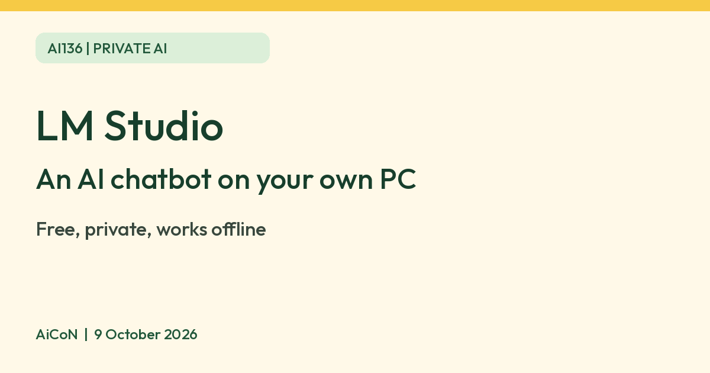

LM Studio: run an AI chatbot on your own computer, free and offline
LM Studio says it lets you download and run AI language models on your own computer, privately and for free, including offline. It is an app with a chat window.

What it is
LM Studio's website says you can run local LLMs (AI chat models) such as gpt-oss, Qwen3, Gemma3 and DeepSeek on your computer, privately and for free. Its docs say it can operate entirely offline once you have downloaded some model files.
Is it free
Yes. LM Studio's home page says it is free for home and work use. The models you download have their own licences, so check each one.
What you need
- Mac: Apple Silicon (M1 or newer) and macOS 14 or newer. Intel Macs are not supported. LM Studio recommends 16 GB of RAM or more, and says 8 GB Macs may work with smaller models.
- Windows: x64 with AVX2 support, or an ARM (Snapdragon X Elite) system. LM Studio recommends at least 16 GB of RAM and at least 4 GB of dedicated graphics memory.
- Linux: Ubuntu 20.04 or newer, x64 or ARM64. The docs say Ubuntu versions newer than 22 are not well tested.
How to start
- Check your computer against the requirements above.
- Install LM Studio from lmstudio.ai/download. The page also promotes Bionic; choose the separate Download LM Studio installer for the chat app described here.
- Open the Discover tab and download a model.
- Open the Chat tab, load the model, and start chatting.
Limits to know
- Models are large downloads and use a lot of memory, so an older laptop may struggle.
- Local models can give wrong or made-up answers, like any AI chatbot. Check anything important.
- LM Studio says local chats and document processing stay on your device. Model discovery, downloads, runtime downloads and app update checks use the internet. For fully disconnected use, finish setup first and work offline.
- The app is aimed at people comfortable installing software and picking models, and it also offers developer tools. We did not test it ourselves.
Frequently asked questions
Do I need an internet connection?
To download models, yes. LM Studio says it can operate entirely offline after that.
Is it as good as ChatGPT?
We have no source comparing them, so we make no claim. Try a model and judge for yourself.
Sources: LM Studio offline operation, LM Studio home, LM Studio system requirements, LM Studio, get started. Checked 9 October 2026.